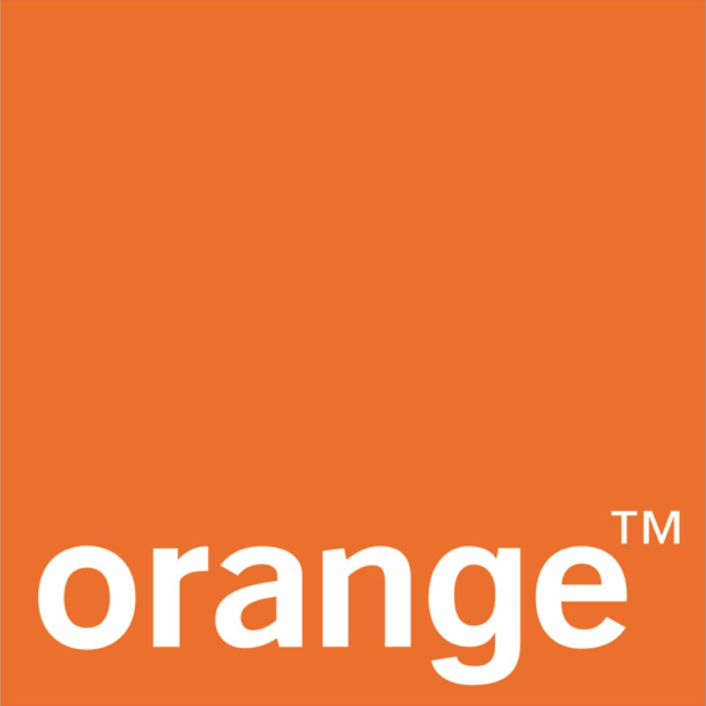
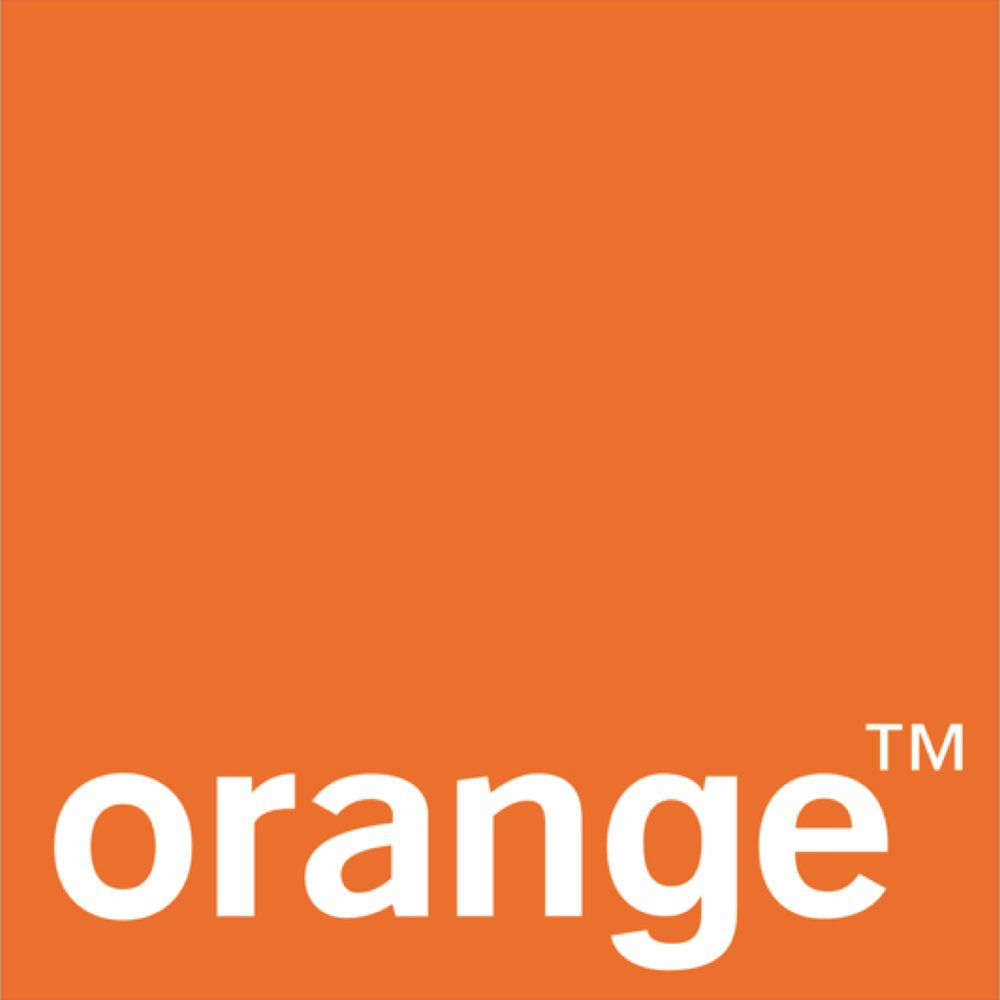

En 1992, il participe à la formation du Parti du renouveau démocratique (PRD) avec Mohamed Djama Elabé et Souleiman Farah Lodon. Il en devient président en juillet 1997. À ce titre il dirige Le Renouveau, journal d'opposition. Il est emprisonné en octobre 1997 pour direction d'un parti politique illégal, en août 1999 pour diffusion de fausses nouvelles, en juin 2001 pour recel d'actes publics et en août 2003 pour diffamation 1. Il quitte ensuite Djibouti et se réfugie à Bruxelles où il dirige le «Mouvement pour le renouveau démocratique et le développement» 2. Il prend la nationalité belge. En 2013, il revient à Djibouti et participe à la création de l'Union pour le salut national (USN) qui présente des candidats aux élections législatives du 22 février 2013, finalement remportées officiellement par le parti présidentiel. Non élu, il est à nouveau arrêté le 5 mars, puis condamné à trois mois de prison le 17 mars 2013. Après un séjour en Belgique, il est à nouveau arrêté à son retour à Djibouti, le 1er octobre 2013.